Công cụ cấu hình kết quả keo biên dạng đặc biệt chủ yếu lấy kết quả tuần tự hóa khuyết tật của Công cụ kiểm tra keo biên dạng đặc biệt, thay thế và tích hợp dữ liệu theo cấu hình, sau đó xuất kết quả tuần tự hóa khuyết tật đã tính toán cuối cùng; hỗ trợ thay thế cấp một và thay thế cấp hai theo phương thức cấu hình nhóm. Kết quả tuần tự hóa khuyết tật của Công cụ kiểm tra keo biên dạng đặc biệt là một chuỗi được lưu trữ dưới dạng từ điển, hình dưới đây giới thiệu sơ lược nội dung từ điển khuyết tật của Công cụ kiểm tra keo biên dạng đặc biệt. Nội dung chủ yếu bao gồm: định nghĩa mã lỗi, kiểu định nghĩa vùng, thông tin cơ bản, thông tin chi tiết theo từng vùng, thông tin tổng hợp về đứt keo/thừa keo/thiếu keo/tràn keo, v.v.; chức năng của công cụ này là lấy thông tin chi tiết theo từng vùng, thay thế và tích hợp các hạng mục kiểm tra liên quan của từng vùng theo kết quả cấu hình, sau đó xuất kết quả cuối cùng.
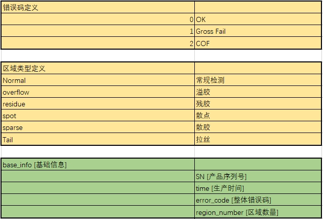
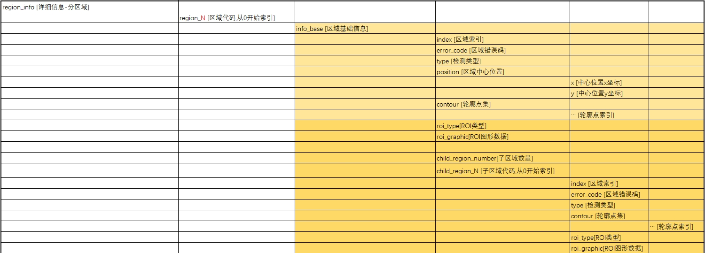
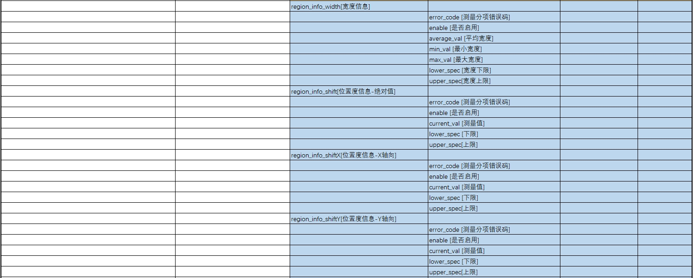
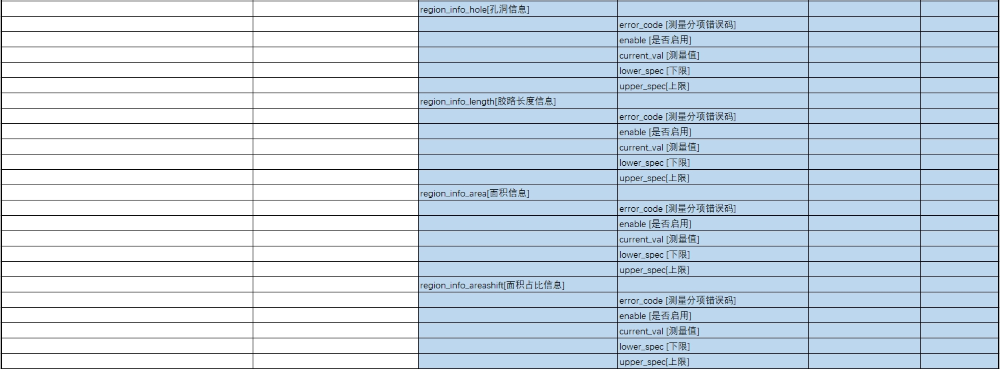
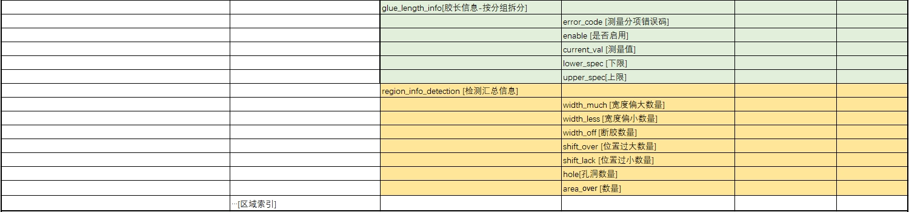
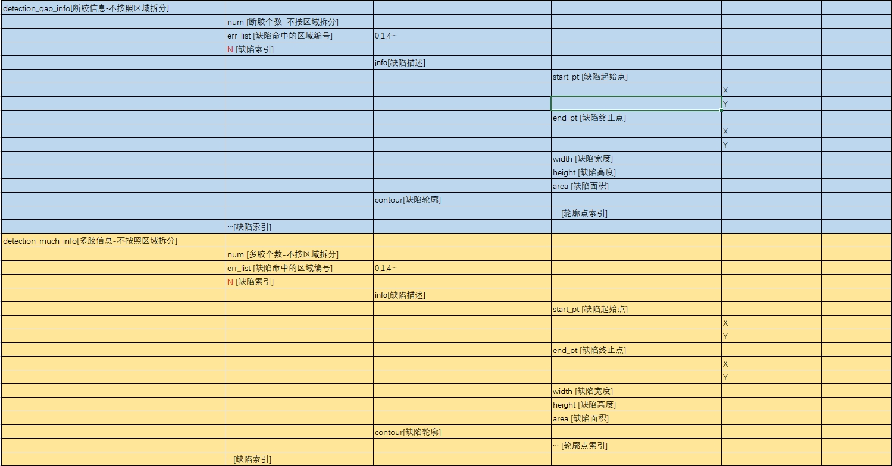
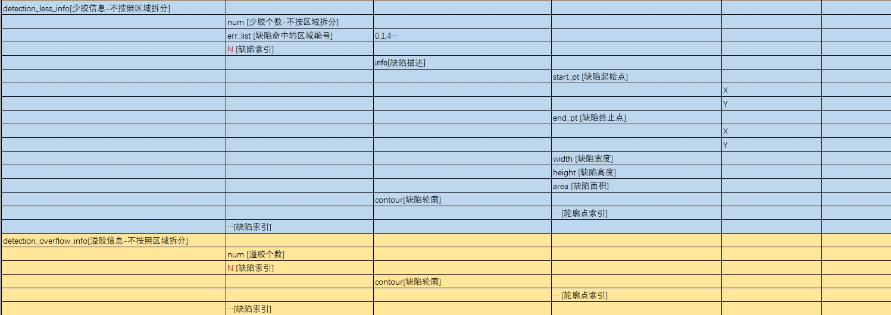
Hình dưới đây là giao diện chính của công cụ, trong hình được chia thành ba chức năng. Thứ nhất là cấu hình hạng mục kiểm tra, có thể cấu hình nguồn dữ liệu cần thay thế cho các hạng mục kiểm tra liên quan đã được bật (ngoại trừ chiều dài keo), tức là thay thế giá trị current_val; thứ hai là cấu hình nhóm, có thể thực hiện thay thế cấp hai bằng cách cấu hình số lượng nhóm và chiến lược nhóm. Thứ ba là chức năng gợi ý tô sáng GUI, tô sáng GUI liên quan theo vùng hoặc nguồn dữ liệu đã chọn.
Thực hiện các thao tác như hợp nhất và thay thế kết quả tuần tự hóa khuyết tật của Công cụ kiểm tra keo biên dạng đặc biệt, cấu hình thông qua giao diện thuộc tính nâng cao để đơn giản hóa quá trình tính toán và giảm chi phí bảo trì dự án.
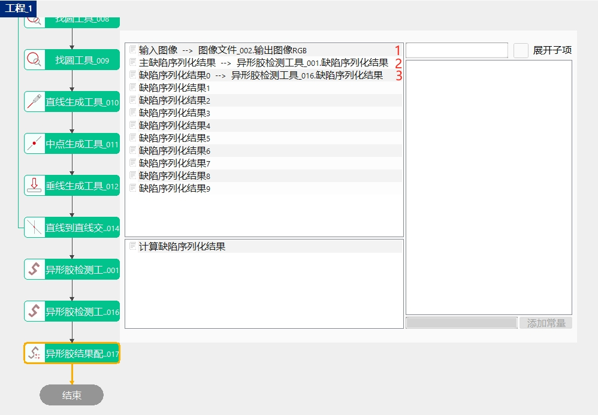
Cấu hình hạng mục kiểm tra, công cụ này sẽ tự động tạo các vùng kiểm tra chính, bao gồm số lượng vùng và dữ liệu, dựa trên dữ liệu của công cụ được liên kết với tham số kết quả kiểm tra khuyết tật chính.
1、Nhấp vào vùng có hạng mục cần cấu hình.
2、Chọn chiến lược tính toán, bao gồm lấy giá trị lớn nhất, lấy giá trị nhỏ nhất và giá trị trung bình.
3、Chuyển sang hạng mục kiểm tra mục tiêu, nhấp vào nút thêm nguồn dữ liệu mới, một dữ liệu không hợp lệ sẽ được thêm vào cuối danh sách nguồn dữ liệu. Nhấp vào vùng Nguồn dữ liệu của mục đó, dữ liệu nguồn của hạng mục kiểm tra sẽ tự động bật lên. Số lượng nguồn dữ liệu tối đa được hỗ trợ thêm là 10.
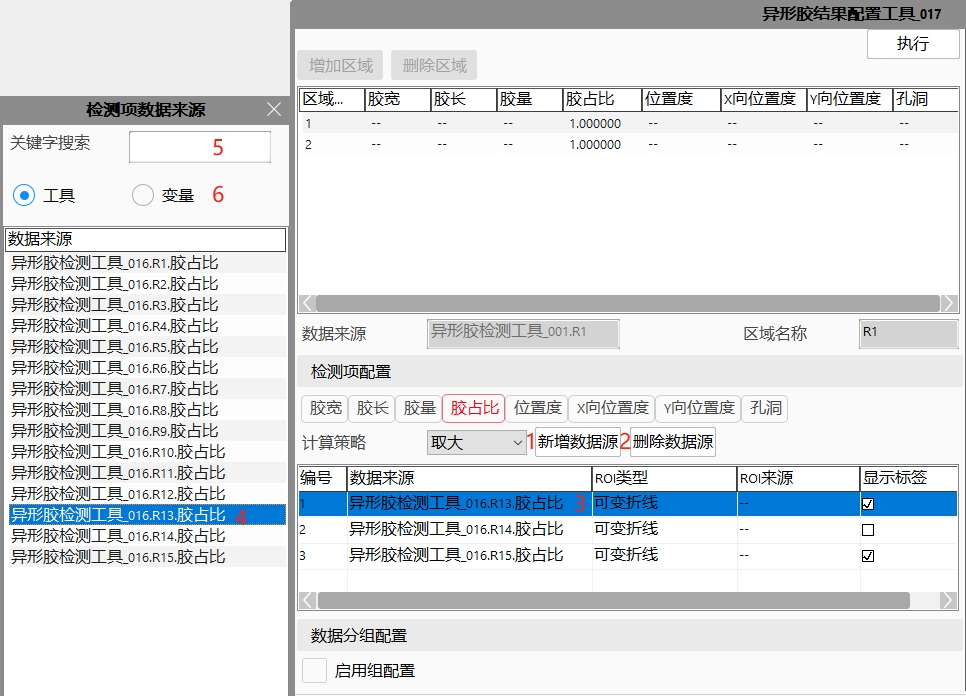
4、Nhấp đúp vào một mục hợp lệ trong danh sách nguồn dữ liệu trên giao diện nguồn dữ liệu của hạng mục kiểm tra, nguồn dữ liệu này sẽ được cập nhật/ghi vào hạng mục kiểm tra đã nhấp trước đó. Để thay thế nguồn dữ liệu đã thêm, chỉ cần nhấp lại vào vùng Nguồn dữ liệu của mục đó, sau đó chọn nguồn dữ liệu mục tiêu và nhấp đúp. Lúc này, một cửa sổ nhắc sẽ bật lên như hình dưới đây, nhấp Có để xác nhận.
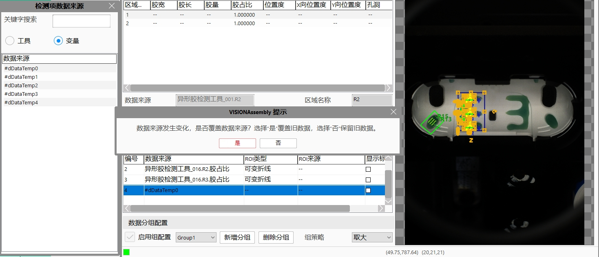
Giao diện nguồn dữ liệu của hạng mục kiểm tra hỗ trợ tìm kiếm và lọc theo công cụ hoặc biến. Khi chọn nút radio công cụ, chỉ hiển thị thông tin khuyết tật của công cụ được liên kết với tham số kết quả tuần tự hóa khuyết tật.
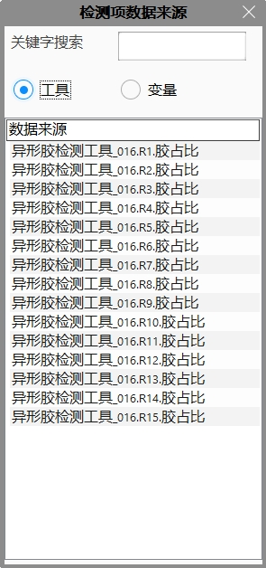
Khi chọn nút radio biến, chỉ hiển thị các biến cục bộ và biến toàn cục thuộc kiểu double.
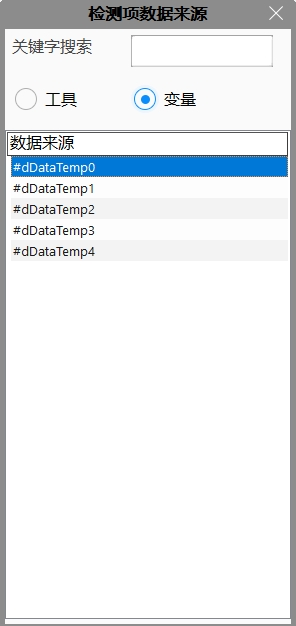
Cấu hình nhóm dữ liệu, nếu cần thay thế cấp hai, phải đánh dấu hộp kiểm bật cấu hình nhóm. Sau khi đánh dấu, danh sách thả xuống nhóm, nút thêm nhóm mới, nút xóa nhóm, văn bản chiến lược nhóm và danh sách thả xuống sẽ được hiển thị. Số lượng nhóm tối đa được hỗ trợ thêm là 10. Sau đó thêm nhóm mới và sửa đổi chiến lược nhóm. Phương thức tính toán là tính kết quả cuối cùng của từng nhóm theo chiến lược tính toán của nhóm đó, sau đó thực hiện phép tính cuối cùng cho kết quả của tất cả các nhóm theo chiến lược nhóm. Ví dụ: có tổng cộng bốn nhóm, kết quả cuối cùng của từng nhóm lần lượt là 0.8，1.0，1.2 và 1.5, nếu chiến lược nhóm là lấy giá trị lớn nhất thì kết quả cuối cùng là 1.5, nếu lấy giá trị nhỏ nhất thì kết quả cuối cùng là 0.8.
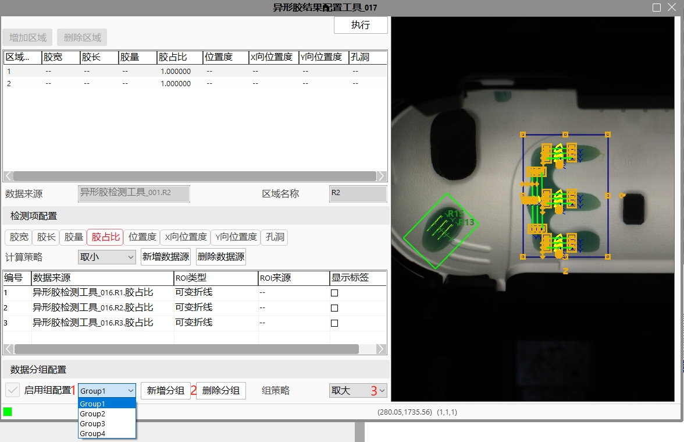
Chức năng gợi ý tô sáng GUI
Nhấp vào danh sách nguồn dữ liệu trên giao diện nguồn hạng mục kiểm tra Khi thêm nguồn hạng mục kiểm tra, nhấp vào danh sách nguồn dữ liệu trên giao diện nguồn hạng mục kiểm tra, chế độ xem sẽ tô sáng GUI liên quan.
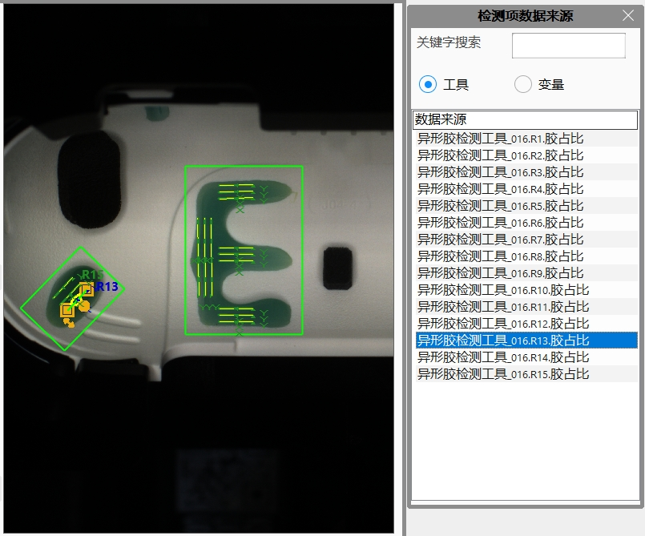
Nhấp vào danh sách vùng Khi cấu hình nguồn hạng mục kiểm tra cho vùng, nhấp vào danh sách vùng, chế độ xem sẽ tô sáng GUI của vùng này và các hạng mục kiểm tra bên trong.
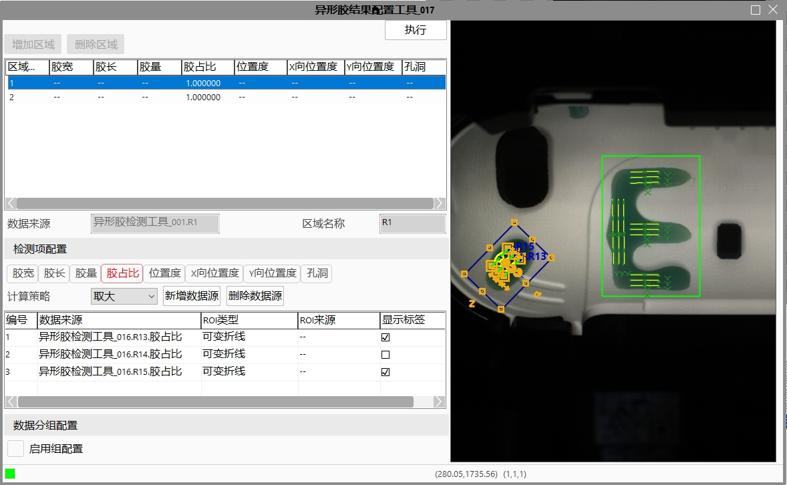
Nhấp vào danh sách nguồn dữ liệu trong cấu hình hạng mục kiểm tra Khi cấu hình nguồn hạng mục kiểm tra cho vùng, nhấp vào danh sách nguồn dữ liệu, chế độ xem sẽ tô sáng GUI của hạng mục kiểm tra liên quan.
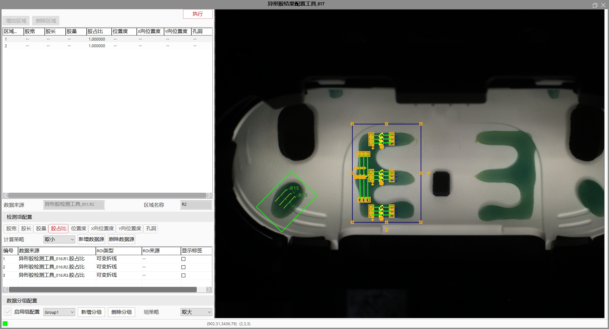
Cũng có thể đánh dấu Hiển thị nhãn, nhãn của GUI liên quan sẽ được hiển thị trên chế độ xem, ví dụ: R1.
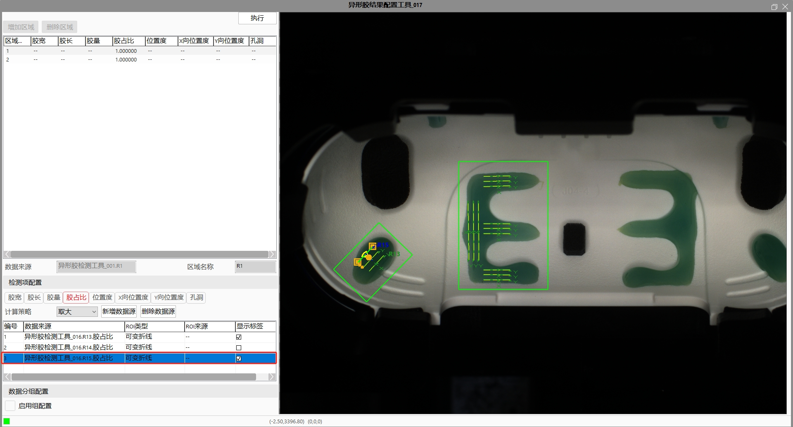
Vấn đề đồng bộ vùng và trạng thái bật/tắt hạng mục kiểm tra
Đồng bộ số lượng vùng chính ：Nếu vùng kiểm tra của công cụ được liên kết với tham số Kết quả tuần tự hóa khuyết tật chính được thêm hoặc giảm, cần mở lại giao diện nâng cao của công cụ này, khi đó số lượng vùng sẽ được tự động đồng bộ. Sau khi đồng bộ hoàn tất, cần xác nhận cấu hình hạng mục kiểm tra hiện tại có đúng như mong đợi hay không; nếu không đúng, cần sửa thủ công nguồn dữ liệu, chiến lược tính toán và các cấu hình liên quan của hạng mục kiểm tra.
Đồng bộ trạng thái bật/tắt hạng mục kiểm tra của vùng chính：Nếu trạng thái kích hoạt của một số hạng mục kiểm tra trong các vùng của công cụ được liên kết với tham số Kết quả tuần tự hóa khuyết tật chính thay đổi, tức là từ bật chuyển thành tắt hoặc từ tắt chuyển thành bật. Khi thực thi, công cụ này sẽ tính toán/không tính toán các hạng mục kiểm tra liên quan theo trạng thái bật/tắt hiện tại. Tuy nhiên, nếu trạng thái kích hoạt của một số hạng mục kiểm tra trong các vùng của công cụ được liên kết với tham số Kết quả tuần tự hóa khuyết tật thay đổi, công cụ này sẽ báo lỗi khi thực thi. Cần xóa nguồn hạng mục kiểm tra liên quan và bật thủ công hạng mục kiểm tra của công cụ nguồn mục tiêu (Công cụ kiểm tra keo biên dạng đặc biệt).
| Mô tả hiện tượng | Phương pháp xử lý |
|---|---|
| Ảnh đầu vào không hợp lệ | Liên kết ảnh đầu vào |
| Chuỗi tham số chưa liên kết với kết quả tuần tự hóa khuyết tật chính | Liên kết kết quả tuần tự hóa khuyết tật chính |
| SN không nhất quán, không thể hợp nhất kết quả khuyết tật | Số sê-ri sản phẩm của công cụ được liên kết với kết quả tuần tự hóa khuyết tật chính và công cụ được liên kết với kết quả tuần tự hóa khuyết tật không nhất quán, hãy sửa số sê-ri sản phẩm; hoặc thay đổi công cụ của kết quả tuần tự hóa khuyết tật |
| Chưa cấu hình trong giao diện thuộc tính nâng cao, thực thi thất bại | Cần mở thuộc tính nâng cao để cấu hình |
| Xử lý chuỗi từ điển bất thường：XX | Kiểm tra chuỗi được liên kết có tuân theo định dạng từ điển quy định hay không |
| Tên tham số | Mô tả tham số |
|---|---|
| Không có | Không có |
| Tên tham số | Mô tả tham số |
|---|---|
| Ảnh đầu vào | Liên kết ảnh màu đầu vào |
| Kết quả tuần tự hóa khuyết tật chính | Liên kết chuỗi tuần tự hóa khuyết tật của Công cụ kiểm tra keo biên dạng đặc biệt chính |
| Kết quả tuần tự hóa khuyết tật（0~9） | Liên kết chuỗi tuần tự hóa khuyết tật của Công cụ kiểm tra keo biên dạng đặc biệt cần được thay thế |
| Tên tham số | Mô tả tham số |
|---|---|
| Kết quả tuần tự hóa khuyết tật đã tính toán | Chuỗi từ điển khuyết tật cuối cùng sau khi thay thế và hợp nhất |
参见“\Samples\异形胶结果配置工具.gvp”。